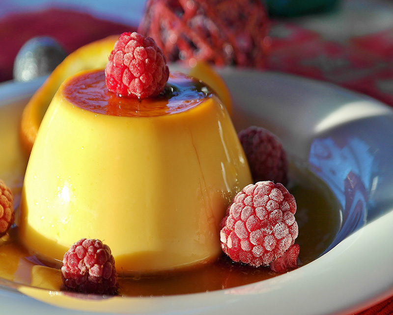
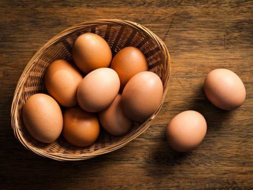
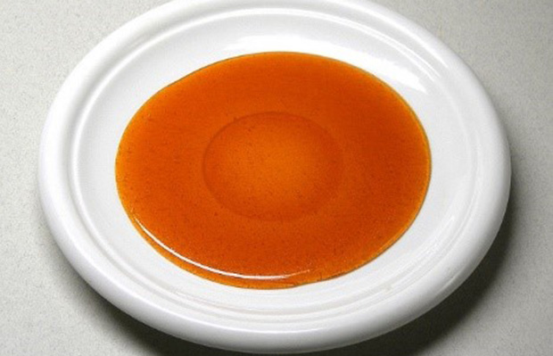
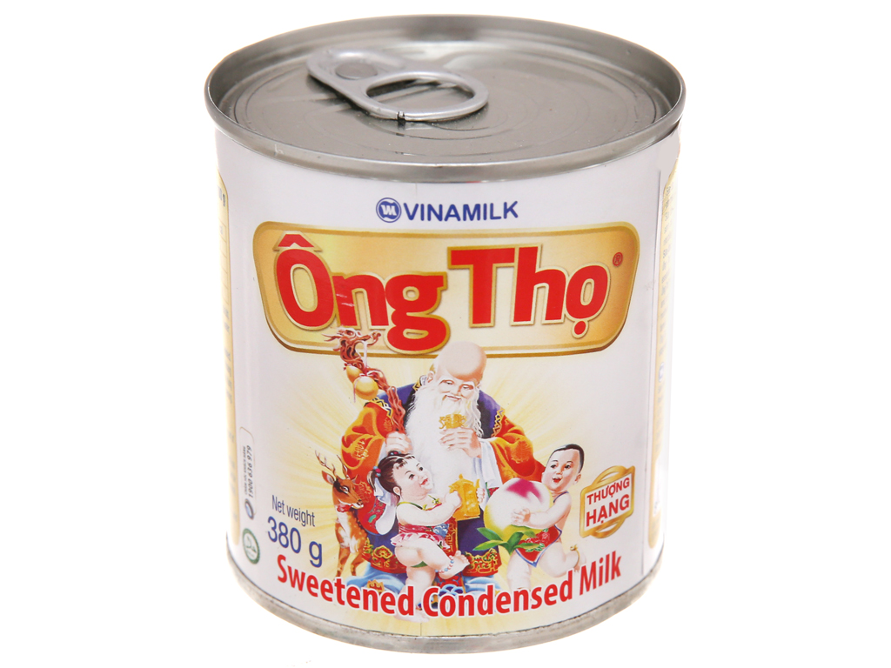
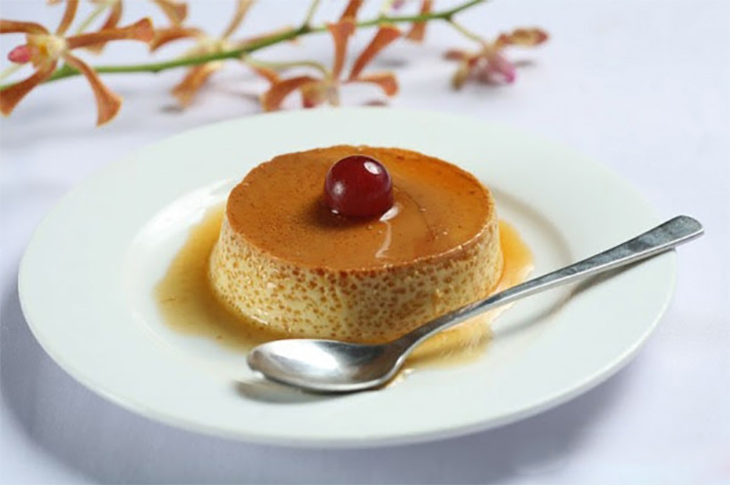
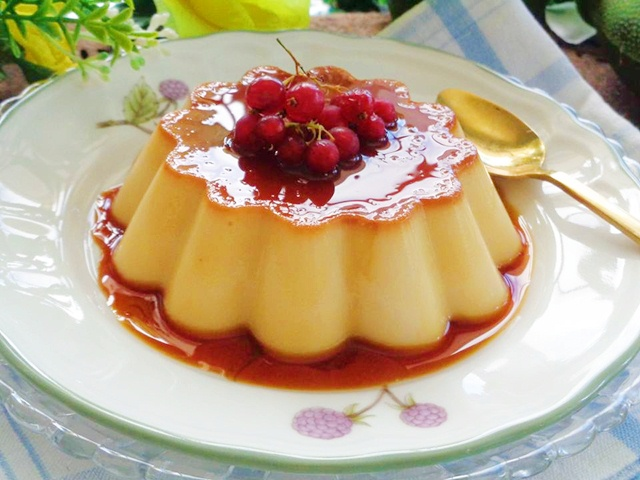

Những lỗi cơ bản thường gặp khi làm bánh flan và cách khắc phục để có mẻ bánh flan thành công ngay từ lần đầu tiên
Bánh flan (bánh caramen), là một món ăn quen thuộc với mọi gia đình. Rất nhiều người thử làm món bánh này tại nhà và mắc phải các trường hợp ngoài ý muốn. Có lúc thì bánh bị rỗ không đẹp mắt, khi thì bị lỏng chứ không sánh mềm như ở ngoài hàng, hay mùi trứng rõ rệt làm cho hương vị không còn thơm ngon hấp dẫn nữa,... Những sự cố này rất phổ biến, làm cho nhiều tín đồ bánh flan dù có đam mê món bánh này cũng ngán ngẩm.
Qua quá trình nghiên cứu cốt lõi món bánh và tích lũy kinh nghiệm gần xa, bài viết này sẽ chỉ ra hướng giải quyết cho tất cả các lỗi thường gặp khi làm bánh flan, giúp cho món bánh của bạn thành công mỹ mãn ngay từ lần đầu tiên thử nghiệm.
Tầm quan trọng của các loại nguyên liệu chính trong món bánh flan và cách chọn nguyên liệu phù hợp
Trứng gà ta hay trứng gà công nghiệp?
Một trong những nguyên liệu quan trọng của món bánh flan là trứng. Lòng trắng trứng làm cho bánh đặc. Lòng đỏ trứng sẽ quyết định màu vàng ươm bắt mắt đặc trưng và mùi thơm của chiếc bánh khi kết hợp với sữa. Chính vì thế, trứng ngon là một trong những yếu tố tạo làm nên một mẻ bánh ngon.
Hai loại trứng phổ biến trên thị trường Việt là trứng gà ta và trứng gà công nghiệp. Thông thường, người ta vẫn sử dụng trứng gà công nghiệp đóng vỉ, dễ dàng mua tại các siêu thị, cửa hàng. Loại trứng này to, giá thành rẻ, đỡ tốn nguyên liệu khi làm bánh và vẫn đảm bảo mùi vị thành phẩm. Trứng gà ta tuy mắc hơn, kích thước nhỏ, nhưng lòng đỏ lớn, sẽ cho ra mùi vị thơm ngon hơn, ít bị hôi tanh mùi trứng.
Vì vậy, tùy mục đích và số lượng làm bánh, bạn có thể chọn lựa loại trứng cho phù hợp.
Sữa tươi thanh nhẹ và không nặng mùi
Giữa sữa tươi không đường và có đường, chúng ta nên chọn loại nào?

Lời khuyên dành cho bạn đó là hãy chọn sữa tươi không đường, không chỉ trong món bánh flan mà còn cho những loại bánh khác. Sữa tươi không đường sẽ cho chúng ta độ nguyên chất trong hương vị lẫn mùi vị, từ đó dễ dàng cân đo đong đếm độ ngọt cũng như dễ biến tấu chiếc bánh thành những hương vị yêu thích.
Vinamilk, TH True Milk là những nhãn hàng có hương vị phù hợp để làm bánh, được người tiêu dùng lựa chọn. Ngoài ra còn có Lothamilk và Dalatmilk, tuy giá bán cao hơn những loại sữa đóng hộp khác trên thị trường, nhưng chất lượng và mùi vị tự nhiên, không ngọt gắt, khi sử dụng để làm bánh sẽ cho mùi thơm nhẹ, độ ngọt béo vừa phải, nên cũng được ưa chuộng không kém.
Đường tạo ra lớp caramen đắng nhẹ tuyệt hảo
Với món bánh này, đường được sử dụng không nhằm mục đích tạo ngọt, mà để làm caramen.
Sữa đặc tạo độ ngọt và béo ngậy
Sữa đặc được nhiều người sử dụng làm bánh flan để tận dụng cả vị ngọt và béo, khác với đường, chỉ cho bánh có vị ngọt.
Hỗn hợp sữa đặc và sữa tươi với tỉ lệ thích hợp sẽ tạo cho bánh có độ ngọt nhẹ, thơm mùi sữa, rất hấp dẫn. Kinh nghiệm của các bà nội trợ cho biết, họ thường sử dụng sữa đặc Ông Thọ và sữa đặc Dutch Lady, bánh không bị ngọt gắt, lại có mùi thơm rất dễ chịu.
Bánh flan bị rỗ có khắc phục được không?
Rất nhiều trường hợp, mặc dù đã rây hỗn hợp trứng sữa trước khi mang bánh đi nấu vẫn không tránh khỏi tình trạng bánh bị rỗ, tuy không ảnh hưởng tới mùi vị nhưng làm mất thẩm mỹ của chiếc bánh. Bánh bị rỗ mặt thường gặp khi chúng ta làm chín bánh bằng phương pháp hấp cách thủy, hơi nước đọng lại trên nắp nồi rớt ngược xuống bánh gây rỗ bề mặt. Bánh bị rỗ đáy và bên trong gặp ở cả 2 phương pháp hấp và nướng. Lúc này, nhiệt độ tiếp xúc ở đáy khuôn cao, bánh sôi khi chưa đông hẳn, gây ra hiện tượng rỗ ở đáy và bên trong bánh.
Cách khắc phục:
+ Đổ nhẹ nhàng hỗn hợp trứng sữa qua rây nhiều lần để lược bớt bọt khí và gợn trứng còn sót lại.
+ Làm nóng lò nướng hoặc xửng hấp trước khi đặt bánh vào, sau đó giữ nhiệt độ ổn định ở mức vừa phải. Nếu hấp cách thủy, để lửa ở mức nhỏ nhất. Nếu nướng bánh, nhiệt độ lò nướng chỉ khoảng 150 đến 160 độ C.
+ Đối với phương pháp hấp, nên dùng nồi hấp hai tầng hoặc xửng hấp. Dùng một cái khăn phủ trên miệng nồi rồi đậy nắp lại. Khăn sẽ hút hơi nước, hạn chế nước đọng rơi xuống bánh làm rỗ mặt bánh
+ Có thể dùng giấy bạc bọc các khuôn bánh lại, nhiệt độ làm chín bánh luôn được đảm bảo mà vẫn yên tâm hoàn toàn bánh không bị rỗ mặt.
+ Không nên dùng khuôn nướng bánh đi kèm lò vì chúng dẫn nhiệt nhanh dễ làm bánh bị rỗ đáy
Đặt thêm một chiếc khăn ở đáy khay để làm giảm nhiệt độ ở đáy khuôn.
Làm sao để bánh không bị hôi trứng khi dùng nóng?
Việc bánh flan sau khi chín bị hôi mùi trứng làm cho nhiều người không thích món bánh này. Tuy nhiên, giải pháp cho vấn đề này vô cùng đơn giản:
Khi bánh còn nóng, mùi trứng trong bánh rất rõ rệt. Nhưng chỉ cần để bánh nguội, dùng lạnh, chúng ta sẽ không còn thấy hiện tượng này nữa.
Đánh trứng không kỹ là một trong những nguyên nhân làm bánh bị hôi. Rất nhiều bà nội trợ sợ rằng đánh trứng mạnh tay sẽ tạo bọt khí khiến bánh bị rỗ.
Tuyệt đối không sử dụng trứng vịt, bởi nó làm cho bánh có mùi trứng rất rõ, gây khó chịu khi dùng bánh.
Nguyên nhân khiến bánh bị lỏng không đông là gì?
Bánh tuy chín nhưng không đông cũng là một nỗi trăn trở của các tín đồ đam mê làm bánh flan. Tỉ lệ trứng sữa không đều là nguyên nhân chính làm cho bánh bị lỏng. Vì thế, để món bánh chuẩn vị chuẩn hình thức, chúng ta cần chú ý tới tỉ lệ của các thành phần trong bánh.
Tỉ lệ trứng: Nhiều người e sợ rằng bánh sẽ bị hôi trứng, nên chỉ sử dụng lòng đỏ trứng để làm bánh và bỏ đi lòng trắng. Tuy nhiên, độ đặc của bánh phụ thuộc nhiều vào lòng trắng. Kinh nghiệm của các bà mẹ cho thấy, tỉ lệ số lòng trắng bằng ½ số lòng đỏ.
Tỉ lệ sữa: Tỉ lệ trứng và sữa không đồng đều là nguyên nhân chính làm bánh bị lỏng. Với loại trứng gà ta, sử dụng 3 quả trứng thêm 3 lòng đỏ trứng (tức 3 lòng trắng và 6 lòng đỏ) cho 500ml sữa. Với trứng gà công nghiệp, lượng lòng trắng có thể ít hơn, thường dùng 2 quả trứng và 3 lòng đỏ (tức 2 lòng trắng và 5 lòng đỏ) cho 500ml sữa. Ngoài ra, chúng ta còn có thể thêm whipping cream theo định lượng 400ml sữa tươi và 150ml whipping cream, bánh flan sẽ mềm mịn và béo ngậy hơn nhiều.
TRÊN ĐÂY LÀ NHỮNG MẸO NHỎ GIÚP CÁC BẠN LÀM BÁNH FLAN NGON VÀ ĐẸP MẮT.
CẢM ƠN CÁC BẠN ĐÃ ĐỌC BÀI VIẾT CỦA CHÚNG TÔI.
* Welcom to Team Vit Bakery *
Tiệm bánh của chúng tôi luôn sẵn sàng phục vụ quý khách với những chiếc bánh đảm bảo chất lượng, ngon và đẹp mắt <3
* FEATURED DISK *
The perfect silky smooth caramel flan!
* REVIEWS *
"Cảm ơn các mẹo làm bánh của Team Vịt Bakery!!Bài viết này rất dễ hiểu"
Phạm Quỳnh
"Bài viết này rất hữu ích,nó đã giúp tôi có một chiếc bánh ưng ý!"
Trần Ân